Unidad 4. Componentes (Spring Framework)¶
Revisiones
| Revisión | Fecha | Descripción |
|---|---|---|
| 1.0 | 30-12-2025 | Adaptación de los materiales a markdown |
4.1. Introducción¶
Spring es un framework de código abierto para crear aplicaciones en Java o Kotlin de forma más fácil, rápida y ordenada. Facilita el trabajo de crear objetos, conectar clases, preparar la base de datos y configurar servidores.
Spring se basa principalmente en:
-
Inversión de Control (IoC): Se encarga de crear y gestionar los objetos de la aplicación.
-
Inyección de Dependencias (DI): Coloca los objetos donde hacen falta automáticamente.
Además tiene tres pilares:
1. Autoconfiguración (Spring Boot): prepara el proyecto por ti
-
Servidor web.
-
Conexión a base de datos.
-
Estructura de proyecto.
-
Dependencias necesarias.
2. Starters: paquetes listos para usar según lo que quieras hacer
| Starter | Descripción |
|---|---|
| spring-boot-starter-web | para rutas y controladores |
| spring-boot-starter-thymeleaf | para páginas HTML |
| spring-boot-starter-data-jpa | para BD y CRUD |
3. Anotaciones: indican qué hace cada clase
Las anotaciones son etiquetas especiales que se colocan encima de clases, funciones o atributos para decirle a Spring cómo debe comportarse con ese código. Las anotaciones son, por tanto, la forma en la que Spring entiende la aplicación. Spring tiene muchísimas anotaciones, porque es un framework muy grande y sirve para muchos tipos de proyectos (web MVC, microservicios, seguridad, batch, mensajería, etc.).
En nuestro caso, como vamos a trabajar únicamente con Spring Boot, API REST, vistas HTML y JPA, no es necesario aprender todas las anotaciones que ofrece Spring. Basta con conocer un conjunto reducido de anotaciones básicas, suficientes para desarrollar un backend completo y funcional.
En las siguientes tablas se recogen las anotaciones más importantes que utilizaremos a lo largo del tema (para API REST/vistas HTML + JPA) (a medida que avancemos, irán apareciendo otras anotaciones adicionales que se introducirán solo cuando sean necesarias para la aplicación):
- Anotaciones de arranque de la app
| Anotación | Dónde se usa | Para qué sirve |
|---|---|---|
| @SpringBootApplication | Clase principal | Marca la clase de arranque de la aplicación Spring Boot y activa la auto-configuración y el escaneo de componentes |
- Anotaciones API REST
| Anotación | Dónde se usa | Para qué sirve |
|---|---|---|
| @RestController | Clase | Indica que la clase es un controlador REST y que los métodos devuelven directamente datos (normalmente JSON). |
| @RequestMapping | Clase o método | Define la ruta base o una ruta concreta para acceder a un recurso |
| @GetMapping | Método | Atiende peticiones HTTP GET (lectura de datos) |
| @PostMapping | Método | Atiende peticiones HTTP POST (creación de datos) |
| @PutMapping | Método | Atiende peticiones HTTP PUT (actualización de datos) |
| @DeleteMapping | Método | Atiende peticiones HTTP DELETE (eliminación de datos) |
| @RequestBody | Parámetro | Permite recibir datos enviados en el cuerpo de la petición (JSON) |
| @PathVariable | Parámetro | Permite recoger valores de la URL (por ejemplo, un identificador) |
- Anotaciones MVC (vistas)
| Anotación | Dónde se usa | Para qué sirve |
|---|---|---|
| @Controller | Clase | Marca una clase como controlador MVC tradicional, devolviendo vistas (HTML con Thymeleaf) |
- Anotaciones de lógica de negocio
| Anotación | Dónde se usa | Para qué sirve |
|---|---|---|
| @Service | Clase | Marca una clase como servicio, donde se implementa la lógica de negocio |
| @Autowired | Atributo o constructor | Inyecta automáticamente una dependencia gestionada por Spring |
- Anotaciones JPA / Base de datos
| Anotación | Dónde se usa | Para qué sirve |
|---|---|---|
| @Entity | Clase | Indica que la clase representa una tabla de la base de datos |
| @Table | Clase | Define el nombre de la tabla asociada a la entidad |
| @Id | Atributo | Marca el atributo como clave primaria |
| @GeneratedValue | Atributo | Indica que el valor de la clave primaria se genera automáticamente |
| @Column | Atributo | Configura una columna de la tabla (nombre, restricciones, unicidad, etc.) |
| @OneToMany | Atributo | Define una relación uno-a-muchos entre entidades |
| @ManyToOne | Atributo | Define una relación muchos-a-uno entre entidades |
| @JoinColumn | Atributo | Especifica la columna usada como clave foránea en una relación |
- Anotaciones de acceso a datos
| Anotación | Dónde se usa | Para qué sirve |
|---|---|---|
| @Repository | Clase o interfaz | Indica que la clase o interfaz se encarga del acceso a datos y de la gestión de excepciones de base de datos |
Los componentes principales de Spring Framework son:
| Componente | Descripción |
|---|---|
| Spring Core | El núcleo del framework, encargado de la inyección de dependencias |
| Spring Boot | Facilita la creación de aplicaciones basadas en Spring con una configuración mínima |
| Spring MVC | Permite el desarrollo de aplicaciones web utilizando el patrón Modelo-Vista-Controlador |
| Spring Data | Simplifica el acceso a datos con soporte para JPA, MongoDB, Redis, entre otros |
| Spring Security | Proporciona herramientas para implementar seguridad en aplicaciones |
| Spring Cloud | Ayuda en la construcción de aplicaciones distribuidas y microservicios |
4.2. Spring Boot¶
Para crear una aplicación se necesita crear el proyecto, desarrollar la aplicación y desplegarla en un servidor. Spring Boot simplifica las tareas de crear el proyecto y desplegar la aplicación ya que:
-
Configura todo automáticamente.
-
Trae un servidor web incorporado (permite crear aplicaciones que se ejecutan de forma independiente sin necesidad de un servidor web externo).
-
Evita escribir XML.
-
Permite arrancar una app con un botón.
-
Usa starters (dependencias ya preparadas).
-
Permite crear proyectos en segundos.
Para crear un proyecto Spring Boot Maven/Gradle con las dependencias necesarias tenemos dos opciones:
-
Crear un proyecto Spring Boot utilizando la herramienta Spring Initializr desde la url https://start.spring.io/ la cual genera un proyecto base con la estructura de una aplicación Spring Boot en un archivo .zip que podemos abrir directamente desde un IDE.
-
Crear un proyecto Spring Boot utilizando un IDE que tenga instalados los plugins necesarios. En el caso de IntelliJ solamente es posible utilizar el plugin de Spring en la versión Ultimate.
Una vez creado el proyecto tendremos las configuraciones y dependencias en los archivos siguientes:
-
application.properties: configuración de aspectos como las conexiones a base de datos o el puerto por donde acceder a nuestra aplicación.
-
pom.xml: dependencias necesarias para que la aplicación funcione.
Dependencia Spring Web
-
Se utiliza para desarrollar aplicaciones web, ya sea basadas en REST o tradicionales con HTML dinámico.
-
Incluye un servidor web embebido (por defecto, Tomcat) para ejecutar la aplicación sin necesidad de configurarlo manualmente.
-
Facilita el manejo de rutas HTTP (GET, POST, PUT, DELETE, etc.) y parámetros de solicitud a través de métodos en los controladores.
-
Usa la biblioteca Jackson (incluida por defecto) para convertir automáticamente objetos Kotlin/Java a JSON y viceversa.
-
Ofrece herramientas para manejar errores y excepciones de forma global mediante @ControllerAdvice o controladores personalizados.
Ejemplo 1: Aplicación Spring Boot con Spring Web
A continuación se describen los pasos para a crear una aplicación que saluda al usuario utilizando Spring Web.
PASO 1: Crear el proyecto
Accedemos a Spring Initializr desde la url https://start.spring.io/, indicamos el nombre de la aplicación y añadimos la dependencia Spring Web (el resto de opciones las podemos dejar como se ve en la imagen). Por último hacemos clic en el botón GENERATE. Esto hará que se cree el proyecto y se descargue en un archivo .zip.
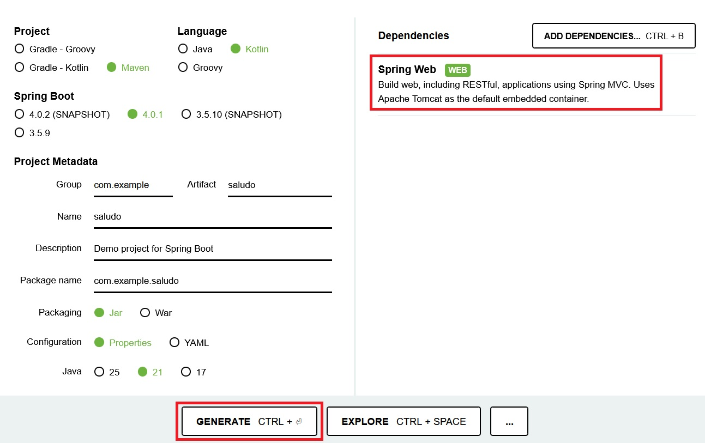
PASO 2: Abrir el proyecto y ejecutarlo
Descomprimimos el archivo obtenido en el paso anterior y lo abrimos con IntelliJ. Vemos que, además de los archivos application.properties y pom.xml se ha creado automaticamente la clase SaludoApplication (con la anotación @SpringBootApplication) y la función de extensión runApplication que sirve para lanzar la aplicación.
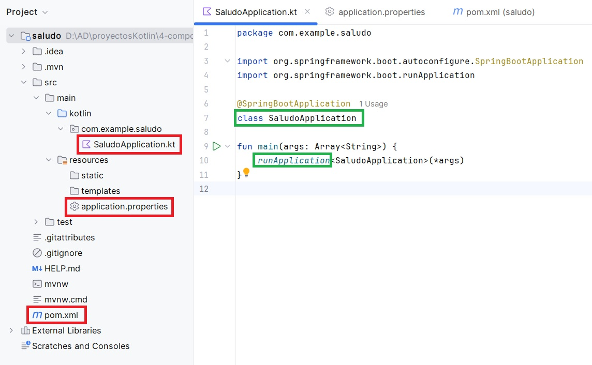
Por tanto deberemos ejecutar la aplicación usando la clase SaludoApplication.kt como clase principal. Al ejecutar la aplicación veremos por Consola la salida de los mensajes de registro de Spring.

Si el puerto 8080 está ocupado aparecerá un mensaje diciendo que no se puede iniciar el servidor Tomcat. Puedes cambiar el puerto, por ejemplo al 8888, añadiendo la siguiente línea en el archivo application.properties (que se encuentra en la carpeta resources del proyecto):
server.port=8888
PASO 3: Añadir el código para saludar
Añadimos a la clase principal SaludoApplication la función sayHello() con el código necesario para que nuestra aplicación envíe un saludo:
@SpringBootApplication
@RestController
class SaludoApplication{
@GetMapping("/hello")
fun sayHello(
@RequestParam(value = "myName", defaultValue = "World") name: String): String
{
return "Hello $name!"
}
}
Como puedes ver, se han incluido anotaciones e importaciones, a continuación se explica cada una de ellas:
-
@RestController: se utiliza para que Spring reconozca la clase como un controlador que maneja solicitudes HTTP. Combina:
- @Controller: Define la clase como un controlador web.
- @ResponseBody: Indica que los métodos devolverán directamente el cuerpo de la respuesta (en este caso, texto plano en lugar de una vista HTML).
-
@GetMapping("/hello"): Es una anotación de Spring que indica que este método debe manejar las solicitudes HTTP GET que lleguen a la URL /hello.
- Enlaza la URL /hello con el método sayHello.
- Cada vez que se acceda a la ruta http://localhost:8080/hello (asumiendo el puerto predeterminado 8080) en un navegador con un método GET, Spring ejecutará el método
sayHello.
-
@RequestParam: se usa para extraer un parámetro de la consulta (query parameter) enviado en la URL.
- El método espera un parámetro de consulta llamado
myName. - Si el cliente no incluye myName en la solicitud, el valor predeterminado será "World", gracias a defaultValue = "World".
- El método espera un parámetro de consulta llamado
PASO 4: Volvemos a ejecutar la aplicación
Ejecutamos la aplicación para levantar el servidor y abrimos la dirección http://localhost:8080/hello o http://localhost:8080/hello?myName=Atenea en el navegador web. La aplicación responde con Hello World! o con Hello Atenea! (que es el nombre pasado como parámetro):

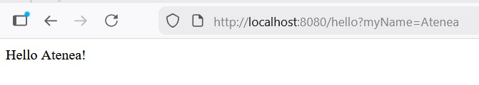
PASO 5: Entender el funcionamiento
Spring Boot está configurado para servir automáticamente cualquier archivo colocado en:
-
static/
-
public/
-
resources/
-
META-INF/resources/
Esto significa que al poner un archivo estático ahí:
-
el servidor embebido (Tomcat) lo devuelve tal cual.
-
no pasa por ningún controlador.
-
no necesita anotaciones.
-
no tienes que hacer un @GetMapping.
Los pasos que sigue la ejecución de la aplicación son los siguientes:
-
Inicio de la aplicación: Se ejecuta el método main, lo que inicia un servidor web embebido (por defecto,
Tomcat) en el puerto 8080. -
Solicitudes HTTP: En nuestro caso la aplicación solamente está disponible en
/helloy cuando un cliente envía unasolicitud GETa http://localhost:8080/hello (con o sin el parámetromyName), el métodosayHellomaneja la solicitud. http://localhost:8080 dará error porque no hay ningún recurso raíz definido. -
Respuesta: La aplicación devuelve un mensaje personalizado en texto plano según el parámetro
myName.
PASO 6: Añadir una página de inicio HTML
Creamos el archivo index.html en src/main/resources/static/ y sustituimos su contenido por:
<!DOCTYPE HTML>
<html>
<head>
<title>Saludo</title>
<meta http-equiv="Content-Type" content="text/html; charset=UTF-8" />
</head>
<body>
<a href="/hello">Link a saludar</a>
<form action="/hello" method="GET" id="nameForm">
<div>
<label for="nameField">Indica tu nombre</label>
<input name="myName" id="nameField">
<button>Saludar</button>
</div>
</form>
</body>
</html>
Ahora la aplicación ya se ejecutará en http://localhost:8080/ y servirá index.html como recurso raíz.

Prueba y analiza el ejemplo 1
- Crea un proyecto Spring Boot llamado
saludoutilizando Spring Initializr. - Prueba el código del ejemplo, verifica que funciona correctamente y pregunta tus dudas.
- Modifica el archivo
index.htmlutilizando css para que tenga una apariencia distinta a la del ejemplo.
4.3. Spring MVC¶
Spring MVC es el módulo de Spring orientado al desarrollo de aplicaciones web siguiendo el patrón Modelo‑Vista‑Controlador (MVC), el cual organiza una aplicación en tres componentes principales:
-
Modelo: Son los datos. Es responsable de:
-
Gestionar el estado de la aplicación.
-
Interactuar con la base de datos u otros servicios para obtener y procesar datos.
-
Proveer datos a la vista.
-
-
Vista: Es lo que ve el usuario. Es responsable de:
-
Renderizar información en un formato adecuado, como HTML.
-
Mostrar al usuario los resultados de las acciones ejecutadas.
-
-
Controlador: Actúa como intermediario entre el modelo y la vista. Es responsable de:
-
Procesar las solicitudes del usuario (peticiones HTTP).
-
Interactuar con el modelo para obtener o modificar datos.
-
Seleccionar y devolver la vista adecuada para responder al usuario.
-
Estos tres componentes trabajan de la siguiente forma:
1) El usuario interactúa con la Vista (interfaz). Envia un formulario o hace clic en un enlace.
2) La petición es enviada al Controlador.
3) El Controlador procesa la petición, interactúa con el Modelo si es necesario y selecciona la Vista que debe renderizar la respuesta.
4) La Vista presenta la respuesta al usuario.
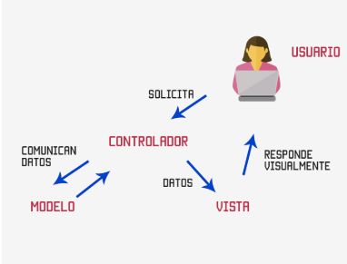
Spring MVC forma parte del ecosistema Spring y se organiza siguiendo una arquitectura en capas en la que cada capa tiene una función concreta y se comunica únicamente con las capas adyacentes. Esta arquitectura encaja perfectamente con el patrón MVC (Model–View–Controller) y proporciona toda la infraestructura necesaria para manejar peticiones HTTP, invocar controladores y devolver vistas (HTML, JSON, etc.) lo que permite aplicaciones más mantenibles, escalables y fáciles de entender.
En la siguiente tabla se muestran las capas más habituales en una aplicación Spring con su equivalencia en Spring MVC, sus anotaciones más habituales y la función que realiza cada una de ellas:
Anotaciones por capa y correspondencia Spring ↔ MVC
| Capas Spring | Capa MVC | Anotaciones | Función |
|---|---|---|---|
| Controller (Web) | Controller | @Controller@RestController@RequestMapping@GetMapping@RequestParam @PostMapping@PutMapping@DeleteMapping |
Recibe peticiones HTTP, gestiona rutas y parámetros, llama a la capa Service y devuelve una vista o una respuesta (JSON) No contiene lógica de negocio ni acceso a datos |
| Model (Entidades) Service (Negocio) Repository (Persistencia) |
Model | @Entity, @Table, @Id@Service, @Transactional@Repository |
Contiene las clases que modelan la información del negocio, aplica reglas y validaciones y accede a la base de datos para realizar operaciones CRUD (manteniendo aislada la BD del resto de la aplicación) |
| View (Representación HTML / JSON) | View | (sin anotaciones) | Representa los datos al usuario: • Archivo HTML con sintaxis específica para contenido dinámico si se utiliza Thymeleaf / JSP (Ubicación Thymeleaf: src/main/resources/templates/)• Datos en formato JSON / XML en apps REST (si no se utiliza un motor de plantillas). En REST, el JSON actúa como la vista |

Vistas con Thymeleaf
Thymeleaf es un motor de plantillas que permite mezclar HTML con datos dinámicos proporcionados por el controlador en Spring MVC. Utiliza atributos especiales que comienzan con th: para manipular estos datos de forma dinámica. La siguiente tabla muestra los atributos Thymeleaf más comunes:
| Atributo | Descripción | Ejemplo |
|---|---|---|
th:text |
Rellena el contenido de un elemento HTML con un valor dinámico. | <p th:text="${mensaje}">Texto por defecto</p> |
th:each |
Itera sobre una colección (lista, array, etc.) y genera un nuevo elemento HTML para cada item. | <ul><li th:each="planta : ${plantas}" th:text="${planta.nombre}">Nombre de la planta</li></ul> |
th:if |
Muestra el contenido solo si la condición es verdadera. | <p th:if="${hayPlantas}">Hay plantas registradas</p> |
th:unless |
Muestra el contenido solo si la condición es falsa. | <p th:unless="${hayPlantas}">No hay plantas registradas</p> |
th:href |
Construye enlaces dinámicos para el atributo href de un enlace <a>. |
<a th:href="@{/planta/{id}(id=${planta.id})}">Ver detalles</a> |
th:src |
Construye enlaces dinámicos para el atributo src de una imagen <img>. |
<img th:src="@{/imagenes/{nombreImagen}(nombreImagen=${planta.imagen})}" alt="Imagen de la planta"> |
th:action |
Define la URL a la que se enviará un formulario cuando se haga submit. | <form th:action="@{/planta/guardar}" method="post"><button type="submit">Guardar</button></form> |
th:object |
Asocia un objeto del modelo con el formulario, permitiendo vincular automáticamente sus atributos. | <form th:object="${planta}" th:action="@{/planta/guardar}" method="post">...</form> |
th:value |
Rellena el valor de un campo de formulario (input, textarea, etc.) con un valor dinámico. |
<input type="text" th:value="${planta.nombre}" /> |
th:field |
Asocia un campo de formulario con un atributo del modelo de Spring, vincula los datos automáticamente. | <input type="text" th:field="*{nombre}" /> |
Ejemplo 2: Aplicación utilizando Spring MVC y Thymeleaf
A continuación se describen los pasos para crear una aplicación que muestra una lista con nombres de planas y junto a cada nombre un enlace que mostrará los detalles de la planta. Desde la pantalla de detalles, se podrá acceder a un formulario para modificar la información de la planta. La estructura del proyecto será la siguiente:
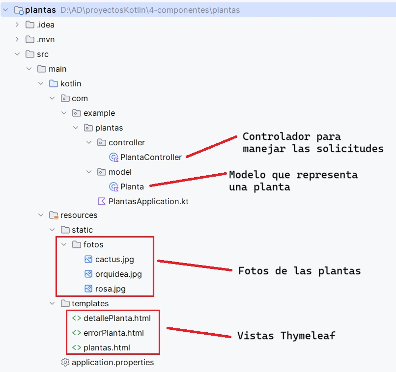
PASO 1: Crear el proyecto
Accedemos a Spring Initializr desde la url https://start.spring.io/, indicamos el nombre de la aplicación plantas y, en este caso, además de la dependencia Spring Web necesitamos también Thymeleaf (el resto de opciones las podemos dejar como se ve en la imagen). Por último hacemos clic en el botón GENERATE para descargar nuestro nuevo proyecto.
Opcionalmente podemos añadir Spring Boot DevTools que nos ahorrará tiempo de desarrollo ya que:
-
Reinicia automáticamente la aplicación cuando cambias código.
-
Recarga las plantillas Thymeleaf sin reiniciar manualmente.
Para tener estas funciones activas, además de añadir la dependencia, hay que configurar IntelliJ para que compile al guardar. Esto se consigue activando las opciones siguientes:
-
Build project automatically (Settings → Build, Execution, Deployment → Compiler)
-
Allow auto-make to start even if developed application is currently running (Settings → Advanced Settings)
De esta forma, cuando realicemos un cambio en un archivo de código de nuestra aplicación, bastará con guardarlo y recargar el navegador (sin reiniciar la app) para ver los cambios inmediatamente.

PASO 2: Abrir el proyecto
Descomprimimos el archivo obtenido en el paso anterior y abrimos el proyecto con IntelliJ. Comprobamos que la clase principal de la aplicación es PlantasApplication.kt, que se encuentra en la carpeta src/main/kotlin/com/example/plantas/ y que contiene el siguiente código:
package com.example.plantas
import org.springframework.boot.autoconfigure.SpringBootApplication
import org.springframework.boot.runApplication
@SpringBootApplication
class PlantasApplication
fun main(args: Array<String>) {
runApplication<PlantasApplication>(*args)
}
PASO 3: Añadir el controlador
En este caso, como la aplicación es muy sencilla el controlador maneja las solicitudes al recibir las peticiones HTTP, decide qué datos se usan y devuelve la vista adecuada. Para añadir el controlador, creamos el archivo PlantaController.kt dentro de la carpeta src/main/kotlin/com/example/plantas/controller/ con el código siguiente:
package com.example.plantas.controller
import com.example.plantas.model.Planta
import org.springframework.stereotype.Controller
import org.springframework.ui.Model
import org.springframework.web.bind.annotation.GetMapping
import org.springframework.web.bind.annotation.PathVariable
import org.springframework.web.bind.annotation.PostMapping
@Controller
class PlantaController {
private val plantas = mutableListOf(
Planta(1, "Rosa", "Flor", 0.5, "rosa.jpg"),
Planta(2, "Cactus", "Suculenta", 1.2, "cactus.jpg"),
Planta(5, "Orquídea", "Flor", 0.3, "orquidea.jpg")
)
@GetMapping("/plantas")
fun mostrarPlantas(model: Model): String {
model.addAttribute("plantas", plantas)
return "plantas" // vista de la lista de plantas (Nombre del archivo HTML en src/main/resources/templates)
}
// Detalles de una planta
@GetMapping("/planta/{id_planta}")
fun verPlanta(@PathVariable id_planta: Int, model: Model): String {
// Buscar la planta por id
val planta = plantas.find { it.id_planta == id_planta }
// Comprobamos si existe
if (planta == null) {
return "errorPlanta" // vista de error sencilla
}
model.addAttribute("planta", planta)
return "detallePlanta" // vista de detalle de una planta
}
// formulario para modificar
@GetMapping("/planta/editar/{id_planta}")
fun editarPlanta(
@PathVariable id_planta: Int,
model: Model
): String {
val planta = plantas.find { it.id_planta == id_planta }
?: return "errorPlanta"
model.addAttribute("planta", planta)
return "editarPlanta"
}
@PostMapping("/planta/guardar")
fun guardarCambios(plantaModificada: Planta): String {
val planta = plantas.find { it.id_planta == plantaModificada.id_planta }
if (planta != null) {
planta.nombre = plantaModificada.nombre
planta.tipo = plantaModificada.tipo
planta.altura = plantaModificada.altura
planta.foto = plantaModificada.foto
}
return "redirect:/planta/${plantaModificada.id_planta}"
}
}
Explicación del código
@Controller Indica a Spring que esta clase maneja peticiones web y devuelve vistas HTML.
@GetMapping Muestra páginas HTML
| Función | Descripción |
|---|---|
@GetMapping("/plantas") |
Muestra una lista de todas las plantas en plantas.html. |
@GetMapping("/planta/{id_planta}") |
Muestra información de detalle de una planta específica en detallePlanta.html. Si no existe, muestra errorPlanta.html. |
@GetMapping("/planta/editar/{id_planta}") |
Carga la planta en un formulario de edición editarPlanta.html. |
@PostMapping Procesa el formulario para editar la información de una planta
| Función | Descripción |
|---|---|
@PostMapping("/planta/guardar") |
Actualiza la planta en memoria y redirige al detalle con redirect:/planta/{id}. Se utiliza redirect para evitar el reenvío de formularios |
Model Pasa datos a la vista
@PathVariable Lee datos de la URL
PASO 4: Añadir el modelo
El modelo representa los datos que maneja la aplicación. Para añadir el modelo creamos el archivo Planta.kt dentro de la carpeta src/main/kotlin/com/example/plantas/model/ con el código siguiente:
package com.example.plantas.model
data class Planta(
var id_planta: Int,
var nombre: String,
var tipo: String,
var altura: Double,
var foto: String
)
PASO 5: Añadir las vistas con Thymeleaf
Para nuestra aplicación necesitamos cuatro vistas, una para la lista de plantas, otra para el detalle de una planta, una tercera para avisar en caso de producirse un error y la última para modificar la información de la planta. Por tanto tendremos cuatro archivos html todos ellos dentro de la carpeta src/main/resources/templates/.
- El archivo que mostrará la lista de plantas será
plantas.htmly su código es el siguiente:
<!DOCTYPE html>
<html xmlns:th="http://www.thymeleaf.org">
<head>
<meta charset="UTF-8">
<title>Lista de Plantas</title>
</head>
<body>
<div class="container mt-4">
<h1 class="mb-4">Plantas</h1>
<p th:if="${plantas.size() > 0}">Aquí tienes una lista de todas las plantas:</p>
<p th:unless="${plantas.size() > 0}">No se han encontrado plantas.</p>
<p th:each="planta : ${plantas}">
<label th:text="${planta.id_planta}">Id de la planta</label> -
<label th:text="${planta.nombre}">Nombre de la planta</label> (<label th:text="${planta.altura}">Altura de la planta</label> m)
<!-- Mostrar enlace a la página de detalles de la planta -->
<a th:href="@{/planta/{id_planta}(id_planta=${planta.id_planta})}">Ver detalles</a>
</p>
</div>
</body>
</html>
- El archivo que mostrará el detalle de una plantas será
detallePlanta.htmly su código es el siguiente:
<!DOCTYPE html>
<html xmlns:th="http://www.thymeleaf.org">
<head>
<meta charset="UTF-8">
<title>Detalles de la Planta</title>
</head>
<body>
<!-- Mostrar foto de la planta -->
<img th:src="@{/fotos/{nombreImagen}(nombreImagen=${planta.foto})}" alt="Foto de la planta" style="width: 200px;">
<h1 th:text="${planta.nombre}">Nombre de la planta</h1>
<p th:text="'Tipo: ' + ${planta.tipo}">Tipo de planta</p>
<p th:text="'Altura: ' + ${planta.altura} + ' metros'">Altura de la planta</p>
<a th:href="@{/planta/editar/{id_planta}(id_planta=${planta.id_planta})}">Modificar planta</a>
<p><a th:href="@{/plantas}">Volver a la lista de plantas</a></p>
</body>
</html>
- El archivo que mostrará el aviso en caso de error será
errorPlanta.htmly su código es el siguiente:
<!DOCTYPE html>
<html xmlns:th="http://www.thymeleaf.org">
<head>
<meta charset="UTF-8">
<title>Planta no encontrada</title>
</head>
<body>
<h1>Error</h1>
<p>La planta que estás buscando no existe.</p>
<a th:href="@{/plantas}">Volver a la lista de plantas</a>
</body>
</html>
- El archivo que mostrará el formulario para modificar la información de una planta será
editarPlanta.htmly su código es el siguiente:
<!DOCTYPE html>
<html xmlns:th="http://www.thymeleaf.org">
<head>
<meta charset="UTF-8">
<title>Editar planta</title>
</head>
<body>
<h1>Modificar planta</h1>
<form th:action="@{/planta/guardar}"
th:object="${planta}"
method="post">
<input type="hidden" th:field="*{id_planta}">
<p><label>Nombre: </label><input type="text" th:field="*{nombre}"></p>
<p><label>Tipo: </label><input type="text" th:field="*{tipo}"></p>
<p><label>Altura: </label><input type="number" step="0.1" th:field="*{altura}"></p>
<p><label>Foto: </label><input type="text" th:field="*{foto}"></p>
<button type="submit">Guardar cambios</button>
</form>
<p><a th:href="@{/planta/{id_planta}(id_planta=${planta.id_planta})}">Volver al detalle</a></p>
</body>
</html>
Explicación de las vistas Thymeleaf
Condicionales:
-
th:if muestra un mensaje si hay plantas registradas.
-
th:unless muestra un mensaje alternativo si no hay plantas.
Iteración sobre la colección:
- th:each="planta : ${plantas}" recorre la lista de plantas (plantas) y crea un bloque de código html (en este caso el que hay dentro de la etiqueta
<p>) para cada planta.
Mostrar datos dinámicos:
-
th:text="${planta.nombre}" muestra el nombre de la planta.
-
th:text="'Tipo: ' + ${planta.tipo}" concatena el texto "Tipo: " con el tipo de la planta.
-
th:text="'Altura: ' + ${planta.altura} + ' metros'" muestra la altura de la planta en metros.
Enlaces dinámicos:
- th:href="@{/planta/{id_planta}(id_planta=${planta.id_planta})}" genera un enlace a la página de detalles de la planta usando el id_planta de la planta.
Imágenes dinámicas:
- th:src="@{/fotos/{nombreImagen}(nombreImagen=${planta.foto})}" carga foto de la planta.
Formulario:
-
th:action="@{/planta/guardar}" indica la URL a la que se enviarán los datos del formulario cuando se haga submit.
-
th:object="${planta}" asocia un objeto del modelo de Spring (Model) con el formulario. En este caso
${planta}hace referencia a la planta que se pasó al modelo desde el controlador:model.addAttribute("planta", planta). Esto permite usar atributos de planta en los campos del formulario.
PASO 6: Añadir las fotos de las plantas
Para poder mostrar las fotos de nuestras plantas en la vista de detalle, hemos guardado las fotos en una carpeta llamada fotos dentro de src/main/resources/static/.
PASO 7: Comprobar y ejecutar
Ejecutamos la aplicación usando la clase PlantasApplication.kt como clase principal y abrimos la url http://localhost:8080/plantas en el navegador. Las siguientes imágenes muestran el funcionamiento de nuestra aplicación:
- Lista de plantas:
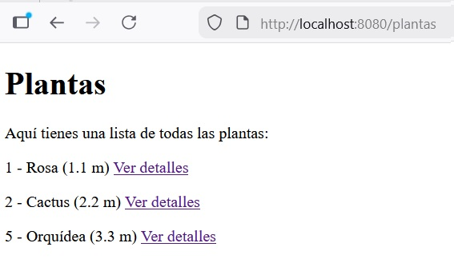
- Detalle de la planta con id_planta = 1 (que aparece al hacer clic en el enlace
Ver detallesjunto al nombre de la planta):

- Error (en este caso por indicar en la url el id_planta de una planta que no existe):
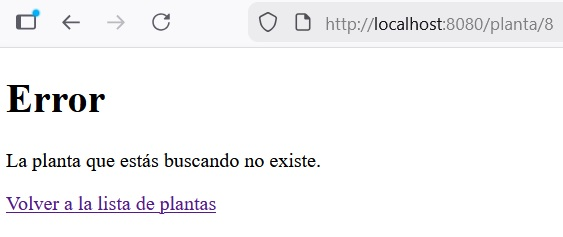
- Formulario de edición:
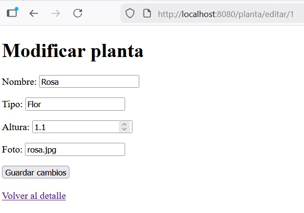
PASO 8: Cambiar el aspecto
Como hemos visto en las capturas anteriores, nuestas vistas html no tienen aplicado ningún estilo. Vamos a darle a nuestra aplicación un aspecto más profesional utilizando bootstrap. Podemos encontrar mucha documentacion en internet sobre como utilizarlo. Por ejemplo en:
En nuestro caso vamos a descargarlo para incluirlo de forma local en nuestro proyecto y vamos a modificar nuestras vistas html para que lo utilicen. Para ello, seguiremos estos pasos:
-
Entrar en https://getbootstrap.com
-
Hacer clic en el botón
Downloady descargar la versión Compiled CSS and JS -
Descomprir el ZIP y copiar la carpeta
bootstrapensrc/main/resources/static/ -
Modificar los archivos html para añadir la línea
<link rel="stylesheet" th:href="@{/bootstrap/css/bootstrap.min.css}">dentro de la etiqueta<head>y añadir<div class="container mt-5">justo debajo de la etiqueta<body>(no olvides añadir tambien</div>justo antes de</body>).
Solamente con estos pequeños cambios nuestra aplicación cambiará su aspecto a:
- Lista de plantas:
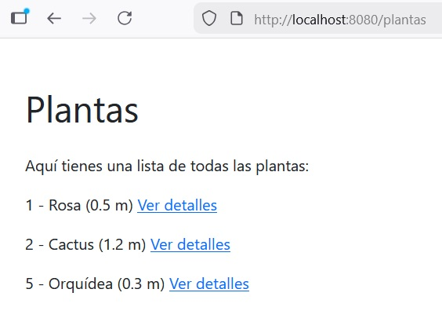
- Detalle de la planta con id_planta = 1 (que aparece al hacer clic en el enlace
Ver detallesjunto al nombre de la planta):
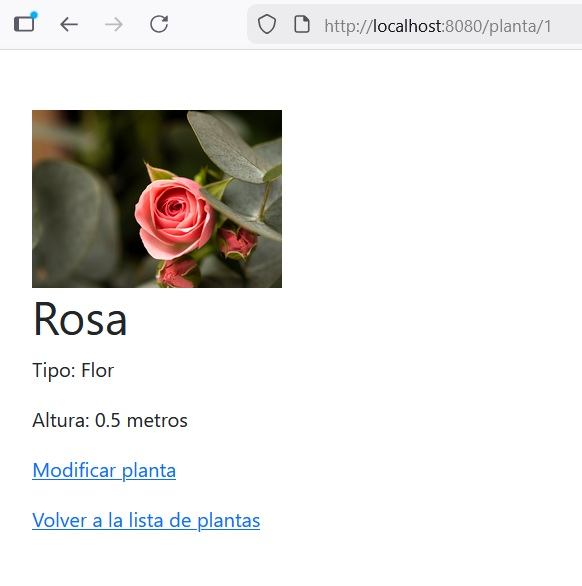
- Error (en este caso por indicar en la url el id_planta de una planta que no existe):
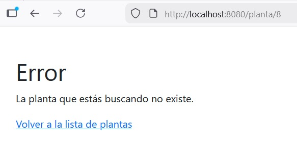
- Formulario de edición:
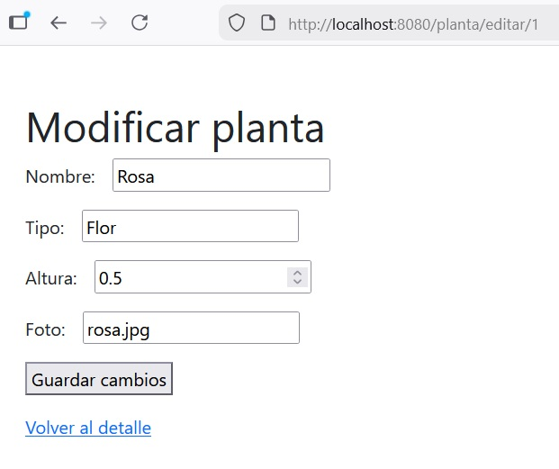
Prueba y analiza el ejemplo 2
- Crea un proyecto Spring Boot llamado
plantasutilizando Spring Initializr. - Prueba el código del ejemplo, verifica que funciona correctamente y pregunta tus dudas.
Trabajando con ficheros
En el ejemplo anterior, la información de las plantas se almacenaba en memoria mediante una lista y el controlador accedía directamente a ella. Ahora vamos a trabajar con los datos en un fichero CSV para disponer de persistencia y vamos a separar la responsabilidad de cada capa del patrón MVC de forma que:
-
Controlador: interactúa con el usuario.
-
Repositorio: maneja los datos.
-
Servicio intermedio: hace de intermediario entre el controlador y el repositorio.
Ejemplo 3: CRUD (CSV) con Spring MVC y Thymeleaf
Este ejemplo es un CRUD de información almacenada en un fichero CSV con todas las capas de la arquitectura MVC bien separadas. La estructura del proyecto será la siguiente:

A continuación se describen los pasos necesarios para desarrollar el proyecto:
PASO 1: Crear el proyecto
Creamos un nuevo proyecto llamado plantasCSV utilizando Spring Initializr con las mismas dependencias del ejemplo anterior. Si copiamos fragmentos de código del anterior ejemplo habrá que tener cuidado con los imports y cambiar com.example.plantas por com.example.plantasCSV
PASO 2: Crear el fichero CSV
Creamos un archivo llamado plantas.csv con los datos iniciales y lo ubicamos en la carpeta src/main/resources/data/. Su contenido inicial será:
1;Rosa;Flor;0.5;rosa.jpg
2;Cactus;Suculenta;1.2;cactus.jpg
3;Orquídea;Flor;0.3;orquidea.jpg
PASO 3: Modificar el controlador
En la arquitectura MVC (Modelo-Vista-Controlador), el controlador es el encargado de recibir las peticiones del usuario (cuando hace clic en un enlace o envía un formulario en el navegador) y decidir qué respuesta dar (normalmente, mostrar una página HTML). Vamos a modificar el controlador que teníamos de la aplicación anterior para que solamente interactúe con el usuario y no acceda a los datos. Además añadiremos el código necesario para las funciones de crear nueva planta y borrar una existente. El código es el siguiente:
package com.example.plantasCSV.controller
import com.example.plantasCSV.model.Planta
import com.example.plantasCSV.service.PlantaService
import org.springframework.stereotype.Controller
import org.springframework.ui.Model
import org.springframework.web.bind.annotation.*
@Controller
class PlantaController(
private val plantaService: PlantaService
) {
@GetMapping("/plantas")
fun listar(model: Model): String {
model.addAttribute("plantas", plantaService.listarPlantas())
return "plantas"
}
@GetMapping("/planta/{id_planta}")
fun detalle(@PathVariable id_planta: Int, model: Model): String {
val planta = plantaService.buscarPorId(id_planta)
?: return "errorPlanta"
model.addAttribute("planta", planta)
return "detallePlanta"
}
// CREAR nueva planta
@GetMapping("/plantas/nueva")
fun nuevaPlanta(model: Model): String {
// Pasamos un objeto vacío (o con ID 0/null) para el formulario
// Como tu data class tiene tipos primitivos, pon valores por defecto dummy
val plantaVacia = Planta(0, "", "", 0.0, "")
model.addAttribute("planta", plantaVacia)
model.addAttribute("titulo", "Nueva Planta")
return "formularioPlanta"
}
// EDITAR planta existente
@GetMapping("/plantas/editar/{id_planta}")
fun editarPlanta(@PathVariable id_planta: Int, model: Model): String {
val planta = plantaService.buscarPorId(id_planta) ?: return "redirect:/plantas"
model.addAttribute("planta", planta)
model.addAttribute("titulo", "Editar Planta")
return "formularioPlanta"
}
// Procesar el GUARDADO (sirve para crear y editar)
@PostMapping("/plantas/guardar")
fun guardarPlanta(@ModelAttribute planta: Planta): String {
plantaService.guardar(planta)
return "redirect:/plantas"
}
// Procesar el BORRADO
@GetMapping("/plantas/borrar/{id_planta}")
fun borrarPlanta(@PathVariable id_planta: Int): String {
plantaService.borrar(id_planta)
return "redirect:/plantas"
}
}
PASO 4: Añadir la clase que maneja los datos
Esta clase se encarga de acceder a los datos y gestionarlos, es decir, leer, crear, actualizar y borrar información sobre plantas. Para añadirla creamos el archivo PlantaFileRepository.kt dentro de la carpeta src/main/kotlin/com/example/plantas/repository/ con el siguiente código:
package com.example.plantasCSV.repository
import com.example.plantasCSV.model.Planta
import org.springframework.stereotype.Repository
import java.io.File
@Repository
class PlantaFileRepository {
private val filePath = "src/main/resources/data/plantas.csv"
fun findAll(): MutableList<Planta> =
File(filePath).readLines().map { linea ->
val partes = linea.split(";")
Planta(
id_planta = partes[0].toInt(),
nombre = partes[1],
tipo = partes[2],
altura = partes[3].toDouble(),
foto = partes[4]
)
}.toMutableList()
fun save(planta: Planta) {
val plantas = findAll()
// Buscamos si la planta ya existe para saber si es EDITAR o CREAR
val index = plantas.indexOfFirst { it.id_planta == planta.id_planta }
if (index != -1) {
// EDITAR: Reemplazamos la planta existente
plantas[index] = planta
} else {
// CREAR: Calculamos nuevo ID (Simulación de Auto-Increment)
val nuevoId = (plantas.maxOfOrNull { it.id_planta } ?: 0) + 1
// Usamos copy porque los val son inmutables, asignando el nuevo ID
plantas.add(planta.copy(id_planta = nuevoId))
}
escribirArchivo(plantas)
}
fun deleteById(id_planta: Int) {
val plantas = findAll()
plantas.removeIf { it.id_planta == id_planta }
escribirArchivo(plantas)
}
private fun escribirArchivo(plantas: List<Planta>) {
val contenido = plantas.joinToString(separator = "\n") { planta ->
"${planta.id_planta};${planta.nombre};${planta.tipo};${planta.altura};${planta.foto}"
}
File(filePath).writeText(contenido)
}
}
PASO 5: Añadir la clase del servicio intermedio
En la arquitectura MVC el servicio actúa como el intermediario entre el controlador (parte que interactúa con el usuario) y el repositorio (parte que maneja los datos). Para añadirla creamos el archivo PlantaService.kt dentro de la carpeta src/main/kotlin/com/example/plantas/service/ con el siguiente código:
package com.example.plantasCSV.service
import com.example.plantasCSV.model.Planta
import com.example.plantasCSV.repository.PlantaFileRepository
import org.springframework.stereotype.Service
@Service
class PlantaService(
private val repository: PlantaFileRepository
) {
fun listarPlantas(): MutableList<Planta> =
repository.findAll()
fun buscarPorId(id_planta: Int): Planta? =
repository.findAll().find { it.id_planta == id_planta }
fun guardar(planta: Planta) {
repository.save(planta)
}
fun borrar(id_planta: Int) {
repository.deleteById(id_planta)
}
}
PASO 6: Modificar las vistas
A los archivos html del ejemplo anterior les hemos hecho algunas modificaciones y ahora quedan así:
- El archivo que mostrará la lista de plantas será
plantas.htmly su código es el siguiente:
<!DOCTYPE html>
<html xmlns:th="http://www.thymeleaf.org">
<head>
<meta charset="UTF-8">
<title>Lista de Plantas</title>
<link rel="stylesheet" th:href="@{/bootstrap/css/bootstrap.min.css}">
</head>
<body>
<div class="container mt-5">
<h1>Plantas</h1>
<h5 th:if="${plantas.size() > 0}">Aquí tienes una tabla con todas las plantas y las acciones que puedes hacer con ellas</h5>
<p th:unless="${plantas.size() > 0}">No hay plantas registradas en el sistema</p>
<table class="table table-striped">
<thead>
<tr>
<th>ID</th>
<th>Nombre</th>
<th>Tipo</th>
<th>Acciones</th>
</tr>
</thead>
<tbody>
<tr th:each="planta : ${plantas}">
<td th:text="${planta.id_planta}">1</td>
<td th:text="${planta.nombre}">Rosa</td>
<td th:text="${planta.tipo}">Flor</td>
<td>
<!-- Mostrar enlace a la página de detalles de la planta -->
<a th:href="@{/planta/{id_planta}(id_planta=${planta.id_planta})}" class="btn btn-info btn-sm">Detalles</a>
<a th:href="@{/plantas/editar/{id}(id=${planta.id_planta})}" class="btn btn-info btn-sm">Editar</a>
<!-- En un entorno real, borrar debería ser un form con method POST/DELETE,
pero para aprender, un GET está bien -->
<a th:href="@{/plantas/borrar/{id}(id=${planta.id_planta})}"
class="btn btn-info btn-sm"
onclick="return confirm('¿Estás seguro de borrar esta planta?')">Borrar</a>
</td>
</tr>
</tbody>
</table>
<a th:href="@{/plantas/nueva}" class="mt-5">Agregar Nueva Planta</a>
</div>
</body>
</html>
- El archivo que mostrará el detalle de una plantas será
detallePlanta.htmly su código es el siguiente:
<!DOCTYPE html>
<html xmlns:th="http://www.thymeleaf.org">
<head>
<meta charset="UTF-8">
<title>Detalles de la Planta</title>
<link rel="stylesheet" th:href="@{/bootstrap/css/bootstrap.min.css}">
</head>
<body>
<div class="container mt-5">
<div class="row justify-content-center">
<div class="col-md-6 text-center" style="width: 18rem;">
<div class="card text-center">
<!-- Foto -->
<img th:src="@{/fotos/{nombreImagen}(nombreImagen=${planta.foto})}"
alt="Foto"
class="img-fluid rounded mb-4"
style="max-height: 250px;">
<div class="card-body">
<h1 class="card-title text-info mb-4" th:text="${planta.nombre}">Nombre</h1>
<!-- Datos (usamos fw-bold para negrita) -->
<p class="fs-5">
<span class="fw-bold">Tipo:</span>
<!-- Badge para resaltar el tipo -->
<span th:text="${planta.tipo}">Tipo</span>
</p>
<p class="fs-5">
<span class="fw-bold">Altura:</span>
<span th:text="${planta.altura} + ' m'">0.0 m</span>
</p>
<hr class="my-4">
<a th:href="@{/plantas/editar/{id_planta}(id_planta=${planta.id_planta})}"
class="btn btn-info bt-sm">Editar</a>
<a th:href="@{/plantas/borrar/{id_planta}(id_planta=${planta.id_planta})}"
class="btn btn-info bt-sm"
onclick="return confirm('¿Estás seguro de borrar esta planta?')">Borrar</a>
</div>
</div>
<p class="mt-3"><a th:href="@{/plantas}">Volver al listado</a></p>
</div>
</div>
</div>
</body>
</html>
- El archivo que mostrará el aviso en caso de error será
errorPlanta.htmly su código es el siguiente:
<!DOCTYPE html>
<html xmlns:th="http://www.thymeleaf.org">
<head>
<meta charset="UTF-8">
<title>Planta no encontrada</title>
<link rel="stylesheet" th:href="@{/bootstrap/css/bootstrap.min.css}">
</head>
<body>
<div class="container mt-5">
<h1>Error</h1>
<p>La planta que estás buscando no existe.</p>
<a th:href="@{/plantas}">Volver a la lista de plantas</a>
</div>
</body>
</html>
- El archivo que mostrará el formulario para añadir una planta o modificar la información de una existenet será
formularioPlanta.htmly su código es el siguiente:<!DOCTYPE html> <html xmlns:th="http://www.thymeleaf.org"> <head> <title th:text="${titulo}">Formulario Planta</title> <link rel="stylesheet" th:href="@{/bootstrap/css/bootstrap.min.css}"> </head> <body> <div class="container mt-5"> <h1 th:text="${titulo}">Formulario</h1> <form th:action="@{/plantas/guardar}" th:object="${planta}" method="post"> <!-- Campo oculto para el ID. Si es 0 se creará nuevo, si es > 0 se editará --> <input type="hidden" th:field="*{id_planta}" /> <div class="mb-3"> <label class="form-label">Nombre:</label> <input type="text" class="form-control" th:field="*{nombre}" required /> </div> <div class="mb-3"> <label class="form-label">Tipo:</label> <input type="text" class="form-control" th:field="*{tipo}" required /> </div> <div class="mb-3"> <label class="form-label">Altura (m):</label> <input type="number" step="0.1" class="form-control" th:field="*{altura}" /> </div> <div class="mb-3"> <label class="form-label">Nombre Foto (ej: rosa.jpg):</label> <input type="text" class="form-control" th:field="*{foto}" /> </div> <button type="submit" class="btn btn-success">Guardar</button> <a th:href="@{/plantas}" class="btn btn-secondary">Cancelar</a> </form> </div> </body> </html>
PASO 7: Comprobar y ejecutar
Ejecutamos la aplicación usando la clase PlantasApplication.kt como clase principal y abrimos la url http://localhost:8080/plantas en el navegador. Las siguientes imágenes muestran el funcionamiento de nuestra aplicación:
- Lista de plantas (en este caso se ha cambiado la lista por una tabla y se han añadido botones de acciones a cada planta):

- Detalle de la planta:
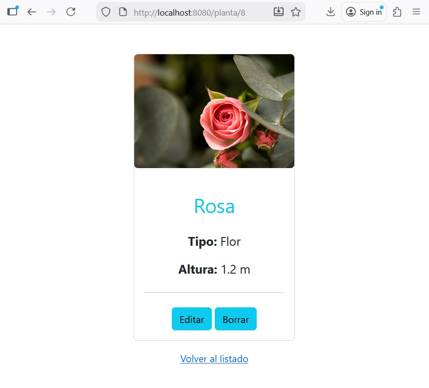
- Formulario de edición (sirve tanto para añadir una nueva planta como para modificar una ya existente):
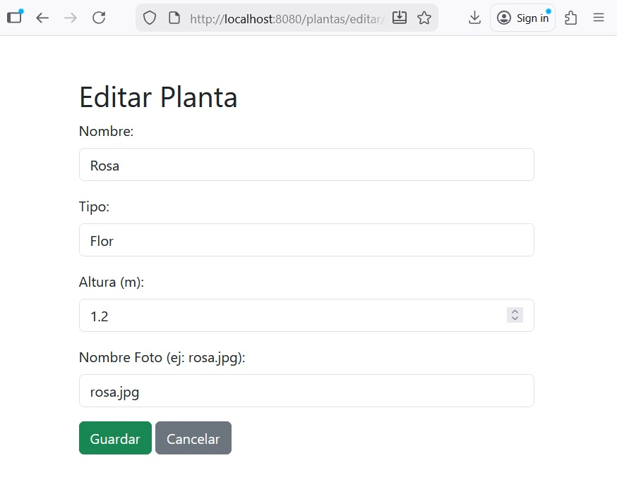
- Mensaje de confirmación de borrado:
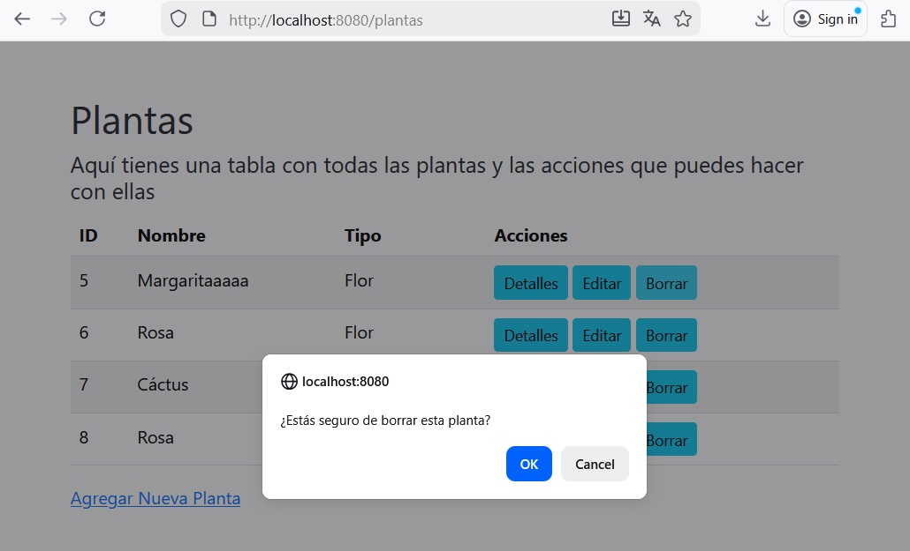
PASO 8: Entender el funcionamiento
Al ejecutar el programa se produce esta secuencia de acciones:
-
El usuario entra a /plantas.
-
El controlador recibe la petición y llama al servicio (listarPlantas).
-
El servicio llama al repositorio (findAll).
-
El repositorio lee el archivo plantas.csv, convierte el texto en objetos y los devuelve.
-
El controlador mete esos objetos en el modelo y carga la plantilla HTML plantas.html.
-
El usuario lee la información de las plantas en su navegador.
Prueba y analiza el ejemplo 3
- Crea un proyecto Spring Boot llamado
plantasCSVutilizando Spring Initializr. - Prueba el código del ejemplo, verifica que funciona correctamente y pregunta tus dudas.
Práctica 1: Trabaja en tu aplicación
- Crea un nuevo proyecto Spring Boot (con el nombre de tu aplicación) utilizando Spring Initializr.
- Tu aplicación tendrá las operaciones CRUD sobre un fichero CSV con la información de tu aplicación.
- Modifica el aspecto de las vistas con
bootstrapocsspropio para que el resultado quede totalmente diferente al del ejemplo.
4.4. Spring Data¶
Spring Data proporciona herramientas y abstracciones para facilitar el acceso a bases de datos y otras fuentes de datos de manera eficiente y consistente. Su objetivo principal es simplificar la interacción con diferentes tipos de bases de datos, tanto relacionales (como PostgreSQL o MySQL) como NoSQL (por ejemplo MongoDB), reduciendo la cantidad de código necesario y unificando la forma de trabajar con los datos.
Se utiliza para:
1. Acceso Simplificado a Datos:
- Reduce la necesidad de escribir consultas SQL complejas o código JDBC al exponer métodos predefinidos para operaciones comunes.
- Permite realizar operaciones CRUD (Crear, Leer, Actualizar, Eliminar) con facilidad.
2. Abstracción de Repositorios: Ofrece la interfaz Repository y subinterfaces como CrudRepository y JpaRepository que proporcionan métodos estándar para la gestión de entidades en bases de datos relacionales.
3. Consultas Personalizadas: Permite escribir consultas personalizadas mediante anotaciones como @Query. También admite la creación de métodos de consulta basados en el nombre del método, como findByNombre(String nombre).
4. Compatibilidad con Múltiples Tecnologías de Bases de Datos:
- Relacionales: Mediante JPA (Java Persistence API).
- NoSQL: MongoDB, Redis, Neo4j, Cassandra, etc.
- Buscadores: Elasticsearch, Solr.
5. Configuración Declarativa: Al integrar Spring Data con Spring Boot, se pueden configurar muchas opciones mediante propiedades en application.properties, evitando configuraciones manuales detalladas.
6. Integración con Spring Boot: Con dependencias específicas como spring-boot-starter-data-jpa o spring-boot-starter-data-mongodb, Spring Data se integra perfectamente con el resto del ecosistema de Spring.
En lugar de proporcionar una única solución, Spring Data está compuesto por varios módulos, cada uno diseñado para un tipo concreto de tecnología de persistencia, como bases de datos relacionales, NoSQL o sistemas de búsqueda. Gracias a esta estructura modular, el desarrollador puede cambiar la tecnología de persistencia sin modificar la arquitectura general de la aplicación. Sus principales módulos son:
- Spring Data JPA: Proporciona una integración con JPA para bases de datos relacionales. Es ideal para trabajar con entidades Java mapeadas a tablas de bases de datos. JPA es la especificación para persistir, leer y gestionar data desde los objetos Java a la base de datos.
- Spring Data MongoDB: Facilita el acceso a bases de datos MongoDB, una base de datos NoSQL orientada a documentos.
- Spring Data Redis: Para aplicaciones que necesitan interactuar con Redis, una base de datos en memoria.
- Spring Data Cassandra: Proporciona soporte para bases de datos distribuidas como Cassandra.
- Spring Data Elasticsearch: Simplifica las interacciones con Elasticsearch, un motor de búsqueda y análisis.
4.4.1. Spring Data JPA (BD relacionales)¶
Spring Data JPA (Java Persistence API) es un módulo de Spring Data que sirve para simplificar el acceso a bases de datos relacionales utilizando objetos (clases) sin tener que escribir SQL ni código repetitivo. Con Spring Data JPA:
-
Solo defines entidades (@Entity)
-
Creas interfaces Repository
-
Spring genera automáticamente el código
Anotaciones JPA
Algunas de las anotaciones JPA son las siguientes:
Anotaciones de Mapeo JPA
@Entity- Marca una clase como una entidad JPA, mapeada a una tabla en la base de datos.
@Entity
data class Planta(
@Id
val id: Int,
val nombre: String,
val tipo: String,
val altura: Double
)
@Table- Especifica el nombre de la tabla que corresponde a la entidad.
@Entity
@Table(name = "plantas")
data class Planta(
@Id
var id_planta: Int,
val nombre: String,
val tipo: String,
val altura: Double
)
@Id- Indica que un campo es la clave primaria de la tabla.
@Id
val id_planta: Int
@GeneratedValue- Define cómo se genera el valor de la clave primaria (GenerationType.IDENTITY,GenerationType.SEQUENCE, etc.)
@Id
@GeneratedValue(strategy = GenerationType.IDENTITY)
val id_planta: Int
@Column- Configura una columna de la tabla, como nombre, si es nula o única.
@Column(nombre = "planta_nombre", nullable = false, unique = true)
val name: String
@JoinColumn- Especifica la columna que actúa como clave foránea.
@ManyToOne
@JoinColumn(name = "id_jardin")
var jardin: Jardin
@Lob- Indica que un campo es un objeto de gran tamaño (texto o binario).
@Lob
val description: String
@Transient- Excluye un campo del mapeo de base de datos (no se almacena).
@Transient
val calculatedField: String
Anotaciones de relaciones JPA
@ManyToOne,@OneToMany,@OneToOne,@ManyToMany: Definen relaciones entre entidades.
@ManyToOne
val department: Department
| Anotación | Descripción |
|---|---|
@ManyToOne |
Relación muchos a uno |
@OneToMany |
Relación uno a muchos |
@OneToOne |
Relación uno a uno |
@ManyToMany |
Relación muchos a muchos |
Anotaciones de Spring Data JPA
@Repository- Marca una interfaz o clase como repositorio Spring. El_data class_representa la entidad (tabla), mientras que el@Repositoryse encarga de las operaciones de acceso a datos sobre esa entidad.
@Repository
interface PlantaRepository : JpaRepository<Planta, Int>
@Queryy@Param- El primero define una consulta personalizada usando JPQL o SQL nativo y el segundo define parámetros nombrados para consultas con@Query.
//Ejemplo (JPQL):
@Query("SELECT p FROM Planta p WHERE p.nombre = :nombre")
fun findByNombre(@Param("nombre") nombre: String): List<Planta>
//Ejemplo (SQL nativo):
@Query(value = "SELECT * FROM plantas WHERE nombre = :nombre", nativeQuery = true)
fun findByNombreNative(@Param("nombre") nombre: String): List<Planta>
@Modifying- Se utiliza con consultas@Querypara operaciones de actualización o eliminación.
@Modifying
@Query("UPDATE Planta p SET p.nombre = :nombre WHERE p.id_planta = :id_planta")
fun actualizarNombre(
@Param("id_planta") id_planta: Int,
@Param("nombre") nombre: String
)
@EnableJpaRepositories- Habilita la funcionalidad de Spring Data JPA y escanea paquetes para detectar repositorios.
@EnableJpaRepositories(basePackages = ["com.example.repository"])
@EntityGraph- Especifica cómo cargar las relaciones en una consulta, evitando lazy loading.
//Busca una planta por su nombre y carga la planta + el jardín asociado
@EntityGraph(attributePaths = ["jardin"])
fun findByNombre(nombre: String): Planta?
Anotaciones de Transacciones
@Transactional- Marca un método o clase para ejecutar dentro de una transacción.
@Transactional
fun updatePlantaDetails(planta: Planta) { ... }
@Rollback- Utilizada para forzar la reversión de una transacción.
@Transactional
@Rollback
fun testSavePlanta() { ... }
Consultas utilizando convención de nombres
Spring Data JPA permite definir métodos en repositorios siguiendo una convención de nombres específica. Esto simplifica la escritura de consultas comunes sin necesidad de usar JPQL o SQL. Para ello analiza el nombre de los métodos en el repositorio e interpreta su significado para generar consultas automáticamente.
La convención de nombres se utiliza:
-
En consultas sencillas y que no requieren lógica compleja ni múltiples combinaciones.
-
Cuando quieres mantener un código más limpio y directo.
La estructura básica es: findBy + NombreDeCampo + Condición donde:
-
findBy: Indica que se busca una entidad en la base de datos. Alternativas: readBy (lectura de datos), queryBy (consulta de datos) y getBy (obtener datos).
-
NombreDeCampo: Debe coincidir exactamente con el nombre del atributo en la entidad. Se puede incluir navegación de atributos para relaciones (EntidadRelacionada.Atributo).
-
Condición (opcional): Permite añadir operadores lógicos como And, Or, etc. Ejemplo: findByNombreAndAltura.
Ejemplos de métodos según la convención
-
Consultas simples: Método findByNombre(String nombre). Ejemplo de consulta generada:
SELECT * FROM plantas WHERE nombre = ? -
Consultas con condiciones: Método findByNombreAndAltura(String nombre, Double altura). Ejemplo de consulta generada:
SELECT * FROM plantas WHERE nombre = ? AND altura = ? -
Consultas con orden: Método findByNombreOrderByAlturaDesc(String nombre). Ejemplo de consulta generada:
SELECT * FROM plantas WHERE nombre = ? ORDER BY altura DESC -
Consultas con relaciones. Si hay una relación entre entidades, se puede navegar por los campos relacionados: Método findByComarcaNomC(String nomC). Ejemplo de consulta generada:
SELECT * FROM plantas JOIN jardines ON plantas.id_jardin = jardines.id_jardin WHERE plantas.nombre = ?
Palabras clave en la convención
| Palabra Clave | Función | Ejemplo |
|---|---|---|
And |
Combina múltiples condiciones con AND |
findByNombreAndAltura |
Or |
Combina múltiples condiciones con OR |
findByNombreOrAltura |
Between |
Busca valores en un rango | findByAlturaBetween |
LessThan |
Busca valores menores a un límite | findByAlturaLessThan |
GreaterThan |
Busca valores mayores a un límite | findByAlturaGreaterThan |
IsNull |
Busca valores NULL |
findByTipoIsNull |
IsNotNull |
Busca valores que no sean NULL |
findByTipoIsNotNull |
Like |
Busca valores que coincidan con un patrón | findByNombreLike |
NotLike |
Busca valores que no coincidan con un patrón | findByNombreNotLike |
StartingWith |
Busca valores que comiencen con un prefijo | findByNombreStartingWith |
EndingWith |
Busca valores que terminen con un sufijo | findByNombreEndingWith |
Containing |
Busca valores que contengan un patrón | findByNombreContaining |
OrderBy |
Ordena los resultados por un campo específico | findByNombreOrderByAlturaDesc |
Top |
Devuelve los primeros resultados (límite) | findTop3ByAlturaGreaterThan |
First |
Devuelve el primer resultado | findFirstByNombre |
A tener en cuenta:
-
Coincidencia exacta del nombre del campo: Los nombres deben coincidir con los atributos definidos en la entidad.
-
Relaciones: Usa la notación EntidadRelacionada.Atributo para navegar entre tablas relacionadas.
-
Orden: Los métodos pueden incluir palabras clave de ordenación, como OrderBy.
-
Parámetros: Los métodos generados reciben parámetros en el mismo orden en que se declaran en el nombre del método.
Ejemplo 4: CRUD con JPA y MySQL
En este proyecto vamos a almacenar la información de nuestras plantas en una BD MySQL y utilizar JPA para las operaciones CRUD. Los pasos para desarrollar la aplicación son los siguientes:
PASO 1: Crear el proyecto
Creamos un nuevo proyecto llamado plantasMySQL utilizando Spring Initializr. En este caso añadimos la dependencia JPA como se ve en la imagen siguiente:

Hay que tener cuidado si copiamos fragmentos de código del anterior ejemplo ya que habrá que cambiar en los imports com.example.plantasCSV por com.example.plantasMySQL
PASO 2: Añadir dependencias y configuración
Añadimos las siguientes líneas al archivo pom.xml dentro del bloque <dependencies>:
<!-- MySQL Connector -->
<dependency>
<groupId>com.mysql</groupId>
<artifactId>mysql-connector-j</artifactId>
<scope>runtime</scope>
</dependency>
Añadimos las siguientes líneas al archivo application.properties sustituyendo BD por el nombre de nuestra base de datos, user por el nombre de usuario y pass por la contraseña (los que creamos al montar el servidor y crear la base de datos):
# ===============================
# DATASOURCE (MySQL)
# ===============================
spring.datasource.url=jdbc:mysql://localhost:3306/nom_BD?useSSL=false&allowPublicKeyRetrieval=true
spring.datasource.username=user
spring.datasource.password=pass
spring.datasource.driver-class-name=com.mysql.cj.jdbc.Driver
# ===============================
# JPA / HIBERNATE
# ===============================
spring.jpa.database-platform=org.hibernate.dialect.MySQLDialect
spring.jpa.hibernate.ddl-auto=update
spring.jpa.show-sql=true
PASO 3: Añadir el modelo
Ahora nuestra clase Planta debe ser una entidad JPA. En Kotlin, JPA necesita un constructor vacío, por tanto, debemos asignar valores por defecto a todos los campos de la data class para que Kotlin genere ese constructor automáticamente.
El contenido del archivo src/main/kotlin/com/example/plantasMySQL/model/Planta.kt es el siguiente:
package com.example.plantasMySQL.model
import jakarta.persistence.*
@Entity
@Table(name = "plantas")
data class Planta(
@Id
@GeneratedValue(strategy = GenerationType.IDENTITY)
var id_planta: Int? = null,
@Column(nullable = false)
var nombre: String = "",
@Column
var tipo: String = "",
@Column
var altura: Double = 0.0,
@Column
var foto: String = ""
)
PASO 4: Añadir el repositorio
El contenido del archivo src/main/kotlin/com/example/plantasMySQL/repository/PlantaRepository.kt es el siguiente:
package com.example.plantasMySQL.repository
import com.example.plantasMySQL.model.Planta
import org.springframework.data.jpa.repository.JpaRepository
import org.springframework.stereotype.Repository
@Repository
interface PlantaRepository : JpaRepository<Planta, Int>
PASO 5: Añadir el servicio
El código del servicio se simplifica enormemente (ahora llamará a los métodos de PlantaRepository). El contenido del archivo src/main/kotlin/com/example/plantasMySQL/service/PlantaService.kt es el siguiente:
package com.example.plantasMySQL.service
import com.example.plantasMySQL.model.Planta
import com.example.plantasMySQL.repository.PlantaRepository
import org.springframework.stereotype.Service
import kotlin.compareTo
import java.io.File
import kotlin.collections.map
import kotlin.io.readLines
import kotlin.text.split
import kotlin.text.toDouble
@Service
class PlantaService(private val repository: PlantaRepository) {
fun listarPlantas(): List<Planta> = repository.findAll()
fun buscarPorId(id: Int): Planta? = repository.findById(id).orElse(null)
fun guardar(planta: Planta): Planta = repository.save(planta)
fun borrar(id: Int) {
if (repository.existsById(id)) {
repository.deleteById(id)
}
}
fun importarDesdeCSV() {
// 1. Verificar si ya hay datos para no duplicar (opcional)
//if (repository.count() > 0) return
// 2. Leer el fichero (Lógica del Ejemplo 3)
val filePath = "src/main/resources/data/plantas.csv"
val file = File(filePath)
if (file.exists()) {
println("el fichero existe")
val plantasLeidas = file.readLines().map { linea ->
val partes = linea.split(";")
// 3. Crear el objeto Planta (Lógica del Ejemplo 4)
// IMPORTANTE: Ponemos id_planta = null para que se genere uno nuevo
Planta(
id_planta = null,
nombre = partes[1],
tipo = partes[2],
altura = partes[3].toDouble(),
foto = partes[4]
)
}
// 4. Guardar todo en la BD de golpe
repository.saveAll(plantasLeidas)
}
}
}
PASO 6: Añadir el controlador
El contenido del archivo src/main/kotlin/com/example/plantasMySQL/controller/PlantaController.kt es el siguiente:
package com.example.plantasMySQL.controller
import com.example.plantasMySQL.model.Planta
import com.example.plantasMySQL.service.PlantaService
import org.springframework.stereotype.Controller
import org.springframework.ui.Model
import org.springframework.web.bind.annotation.*
@Controller
class PlantaController(private val plantaService: PlantaService) {
@GetMapping("/plantas")
fun listar(model: Model): String {
model.addAttribute("plantas", plantaService.listarPlantas())
return "plantas"
}
@GetMapping("/planta/{id_planta}")
fun detalle(@PathVariable id_planta: Int, model: Model): String {
val planta = plantaService.buscarPorId(id_planta) ?: return "errorPlanta"
model.addAttribute("planta", planta)
return "detallePlanta"
}
@GetMapping("/plantas/nueva")
fun nuevaPlanta(model: Model): String {
val plantaVacia = Planta(nombre = "", tipo = "", altura = 0.0, foto = "")
model.addAttribute("planta", plantaVacia)
model.addAttribute("titulo", "Nueva Planta")
return "formularioPlanta"
}
@GetMapping("/plantas/editar/{id_planta}")
fun editarPlanta(@PathVariable id_planta: Int, model: Model): String {
val planta = plantaService.buscarPorId(id_planta) ?: return "redirect:/plantas"
model.addAttribute("planta", planta)
model.addAttribute("titulo", "Editar Planta")
return "formularioPlanta"
}
@PostMapping("/plantas/guardar")
fun guardarPlanta(@ModelAttribute planta: Planta): String {
plantaService.guardar(planta)
return "redirect:/plantas"
}
@GetMapping("/plantas/borrar/{id_planta}")
fun borrarPlanta(@PathVariable id_planta: Int): String {
plantaService.borrar(id_planta)
return "redirect:/plantas"
}
/*
// 1. Ruta para mostrar la página de inicio (index.html)
@GetMapping("/")
fun inicio(): String {
return "index"
}
*/
// 2. Ruta para ejecutar la importación
@GetMapping("/importar")
fun importarDatos(): String {
plantaService.importarDesdeCSV() // <--- Tienes que crear este método en el Service como hablamos antes
return "redirect:/plantas" // Al terminar, nos lleva a la lista para ver el resultado
}
}
PASO 7: Añadir las vistas, bootstrap y las imágenes
Todos estos archivos los podemos copiar del proyecto del ejemplo anterior, son los siguientes:

PASO 8: Comprobar y ejecutar
Al ejecutar la aplicación PlantaApplication.kt, por primera vez veremos en la consola mensajes de Hibernate: Hibernate: create table plantas (...) que indican que se ha creado la tabla plantas dentro de la base de datos llamada florabotanica.db.
Al abrir http://localhost:8080/plantas en el navegador veremos lo siguiente (inicialmente la tabla plantas estará vacía):
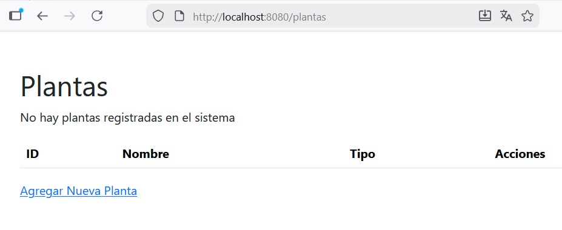
Podemos añadir tantas plantas como queramos con el botón Agregar Nueva Planta y comprobar que los datos se guardan en la BD y son persistentes si detenemos la aplicación y la volvemos a arrancar.
Prueba y analiza el ejemplo 4
- Monta un servidor MySQL en Docker.
- Crea un proyecto Spring Boot llamado
plantasMySQLutilizando Spring Initializr. - Prueba el código del ejemplo, verifica que funciona correctamente y pregunta tus dudas.
Práctica 2: Trabaja en tu aplicación
- Crea un nuevo proyecto Spring Boot (con el nombre de tu aplicación) utilizando Spring Initializr.
- Tu aplicación tendrá una vista principal (index.html) con las opciones siguientes:
- Importar información: Leerá información de un fichero CSV y la guardará en una tabla de una BD MySQL.
- CRUD: funcionará como el ejemplo 4 con las operaciones CRUD sobre la BD MySQL.
- Modifica el aspecto de tu aplicación aplicando alguna característica de
bootstrappara que el resultado quede personalizado a tu gusto.
Consultas utilizando la anotación @Query
La anotación @Query se utiliza:
-
En consultas complejas que involucren múltiples tablas, condiciones avanzadas o subconsultas.
-
Si prefieres optimizar manualmente las consultas.
-
Cuando la convención de nombres generaría un nombre de método excesivamente largo.
La estructura básica es:
@Query("SELECT e FROM EntityName e WHERE e.property = :value")
fun findByProperty(@Param("value") value: String): List<EntityName>
Hay que tener en cuenta que se utiliza JPQL y no SQL
| JPQL | SQL | |
|---|---|---|
| Pregunta | al modelo de objetos | a la base de datos |
| trabaja | con clases y atributos | con tablas y columnas |
| utiliza | nombres de entidades y propiedades de las clases | nombres de tablas y columnas |
JPQL
-
Puede navegar por relaciones entre entidades.
-
Utiliza :nombreParametro para parámetros dinámicos.
Ejemplo sencillo: Devuelve todas las plantas cuyo tipo coincide con el valor indicado.
@Query("SELECT p FROM Planta p WHERE p.tipo = :tipo")
fun findByTipo(@Param("tipo") tipo: String): List<Planta>
Ejemplo con relaciones:
La consulta para buscar las plantas que están asociadas con un jardín específico (según el ID del jardín proporcionado):
@Query("""
SELECT jp
FROM JardinPlanta jp
JOIN jp.planta p
WHERE jp.jardin.id_jardin = :idJardin
ORDER BY p.nombre
""")
fun obtenerPlantasDeJardin(
@Param("idJardin") idJardin: Int
): List<JardinPlanta>
SELECT: ¿qué se devuelve?
SELECT jp (objetos completos y no campos)
FROM: ¿de dónde salen los datos?
FROM JardinPlanta jp (de la clase JardinPlanta)
En SQL sería: FROM jardines_plantas jp (de la tabla jardines_plantas)
JOIN: ¿cómo se relacionan los datos?
JOIN jp.planta p (se usa la relación que ya existe entre los objetos)
En SQL sería: JOIN plantas p ON jp.id_planta = p.id_planta (se relacionan dos tablas usando claves foráneas)
WHERE: ¿qué se filtra?
WHERE jp.jardin.id_jardin = :idJardin (se navega por objetos de la relación → al objeto → a su atributo)
En SQL sería: WHERE jp.id_jardin = :idJardin (se filtra por una columna)
ORDER BY: ¿cómo se ordena?
ORDER BY p.nombre (se ordena por un atributo de la entidad)
En SQL sería: ORDER BY p.nombre (por una columna)
Este mismo ejemplo utilizando convención de nombres quedaría así:
@Repository
interface PlantaRepository : JpaRepository<Planta, Int> {
fun findByJardinIdJardin(
idJardin: Int
): List<Planta>
}
-
findBy: Indica que es un método de consulta.
-
findByJardinIdJardin: Utiliza la convención de nombres para especificar que se desean encontrar plantas basándose en el idJardin del jardín asociado. Los nombres de los parámetros reflejan claramente los campos utilizados en la consulta.
Ejemplo 5: Consultas avanzadas con @Query (MySQL)
En el ejemplo anterior hemos utilizado Spring Data JPA junto con MySQL para implementar un CRUD completo apoyándonos en los métodos que ofrece la interfaz JpaRepository y en consultas generadas automáticamente mediante convención de nombres.
Este mecanismo es suficiente para consultas sencillas, pero cuando las consultas incluyen múltiples condiciones, ordenaciones, actualizaciones directas o requieren el uso de SQL nativo, resulta más adecuado utilizar la anotación @Query.
En esta ampliación se utiliza @Query para realizar consultas avanzadas con SQL nativo sobre nuestra base de datos. Las operaciones UPDATE y DELETE requieren el uso de @Modifying y @Transactional.
Para poder ilustrar la utilización de este tipo de consultas, ampliaremos nuestra aplicación para gestionar las plantas que hay en los jardines. Imagina que a nuestra empresa de jardinería la contratan varios ayuntamienteos que nos piden trabajos del tipo "hay que plantar 2 rosas y 3 pinos en el jardin llamado Tropical" y "hay que plantar 5 rosas y 4 pinos en el jardin llamado Botánico". Para ello ampliaremos con dos tablas más nuestra base de datos y con varios archivos nuestra aplicación. A continuación de describen todos los pasos necesarios:
PASO 1: Crear el proyecto
Podemos crear un proyecto nuevo con las mismas dependencias que el del ejemplo anterior y copiar los archivos que tenemos o ampliar el ejemplo anterior directamente.
PASO 2: Añadir los jardines
Para añadir la gestión de los jardines debemos añadir a la BD una nueva tabla llamada jardines (insertamos dos registros):
CREATE TABLE jardines (
id_jardin INT AUTO_INCREMENT PRIMARY KEY,
nombre VARCHAR(255) NOT NULL,
ubicacion VARCHAR(255)
) ENGINE=InnoDB;
INSERT INTO jardines (nombre, ubicacion)
VALUES ('Botánico', 'Madrid');
INSERT INTO jardines (nombre, ubicacion)
VALUES ('Tropical', 'Valencia');
Luego añadimos a la aplicación los archivos necesarios para las operaciones CRUD sobre los jardines (equivalentes a los que tenemos para las plantas):
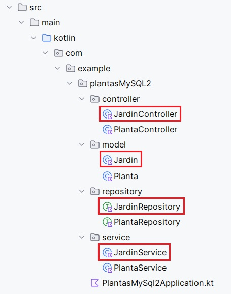
Por último añadimos los archivos html (también equivalentes a los que tenemos para las plantas). Si modificamos el archivo de error nos puede servir tanto para plantas como para jardines, su nuevo código es el siguiente:
<!DOCTYPE html>
<html xmlns:th="http://www.thymeleaf.org">
<head>
<meta charset="UTF-8">
<title>Error</title>
<link rel="stylesheet" th:href="@{/bootstrap/css/bootstrap.min.css}">
</head>
<body>
<div class="container mt-5 text-center">
<h1 class="text-danger">Error</h1>
<p>La información que estás buscando no existe.</p>
<p><a href="/" class="mt-5">Volver a la pantalla de inicio</a></p>
</div>
</body>
</html>
De forma que los archivos html de nuestra aplicación son los siguientes:
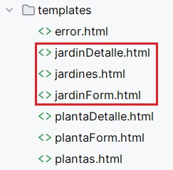
PASO 3: Comprobar jardines
Al abrir http://localhost:8080/jardines en el navegador veremos lo siguiente:
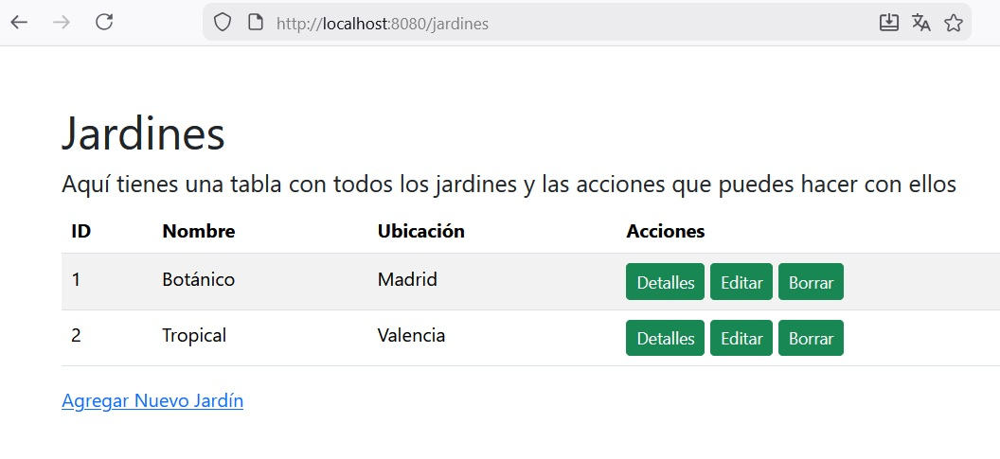
El funcionamiento es exactamente el mismo que el de las plantas.
Una vez tenemos las plantas y los jardines funcionando de forma independiente vamos a añadir una pantalla a nuestra aplicación para poder llevar plantas a los jardines. Para ello añadimos una nueva tabla a la base de datos con la relación (muchos a muchos) entre jardines y plantas y añadimos los archivos necesarios a nuestra aplicación.
PASO 4: Ampliar la base de datos
Añadir la tabla jardines_plantas a la base de datos y hacemos dos inserts (en este caso suponemos que existen los jardines con id 1 y 2 y las plantas con id 1 y 2:
CREATE TABLE jardines_plantas (
id_jardin INT NOT NULL,
id_planta INT NOT NULL,
cantidad INT NOT NULL,
PRIMARY KEY (id_jardin, id_planta)
) ENGINE=InnoDB;
INSERT INTO jardines_plantas (id_jardin, id_planta, cantidad)
VALUES (1, 1, 10);
INSERT INTO jardines_plantas (id_jardin, id_planta, cantidad)
VALUES (2, 2, 5);
PASO 5: Añadir el modelo
En este caso el modelo es un poco más complejo ya que necesita tener configurada la relación muchos a muchos entre las plantas y los jardines. Creamos el archivo JardinPlanta.kt dentro de la carpeta src/main/kotlin/com/example/plantasMySQL2/model/ con el siguiente código:
package com.example.plantasMySQL2.model
import jakarta.persistence.*
@Embeddable
class JardinPlantaId(
var idJardin: Int = 0,
var idPlanta: Int = 0
)
@Entity
@Table(name = "jardines_plantas")
class JardinPlanta(
@EmbeddedId
var id: JardinPlantaId = JardinPlantaId(),
@ManyToOne
@MapsId("idJardin")
@JoinColumn(name = "id_jardin")
var jardin: Jardin? = null,
@ManyToOne
@MapsId("idPlanta")
@JoinColumn(name = "id_planta")
var planta: Planta? = null,
@Column(nullable = false)
var cantidad: Int = 0
)
PASO 6: Añadir el repositorio
De momento el repositorio no contendrá código, lo ampliaremos más adelante, ahora creamos el archivo JardinPlantaRepository.kt dentro de la carpeta src/main/kotlin/com/example/plantasMySQL2/repository/ con el código siguiente:
package com.example.plantasMySQL2.repository
import com.example.plantasMySQL2.model.JardinPlanta
import com.example.plantasMySQL2.model.JardinPlantaId
import org.springframework.data.jpa.repository.JpaRepository
import org.springframework.stereotype.Repository
import org.springframework.data.jpa.repository.Query
import org.springframework.data.repository.query.Param
@Repository
interface JardinPlantaRepository :
JpaRepository<JardinPlanta, JardinPlantaId> {}
PASO 7: Añadir la clase del servicio intermedio
Crear el archivo JardinPlantaService.kt dentro de la carpeta src/main/kotlin/com/example/plantasMySQL2/service/ con el siguiente código:
package com.example.plantasMySQL2.service
import com.example.plantasMySQL2.model.JardinPlanta
import com.example.plantasMySQL2.model.JardinPlantaId
import com.example.plantasMySQL2.model.Jardin
import com.example.plantasMySQL2.model.Planta
import com.example.plantasMySQL2.repository.JardinPlantaRepository
import com.example.plantasMySQL2.repository.PlantaRepository
import com.example.plantasMySQL2.repository.JardinRepository
import org.springframework.stereotype.Service
@Service
class JardinPlantaService(
private val jardinPlantaRepository: JardinPlantaRepository,
private val jardinRepository: JardinRepository,
private val plantaRepository: PlantaRepository
) {
fun listarTodas(): List<JardinPlanta> =
jardinPlantaRepository.findAll()
// Métodos para llenar los desplegables
fun listarJardines(): List<Jardin> = jardinRepository.findAll()
fun listarPlantas(): List<Planta> = plantaRepository.findAll()
// Método para guardar
fun guardar(idJardin: Int, idPlanta: Int, cantidad: Int) {
// 1. Buscamos las entidades (lanzará error si no existen, lo cual es bueno para integridad)
val jardinRef = jardinRepository.findById(idJardin).orElseThrow()
val plantaRef = plantaRepository.findById(idPlanta).orElseThrow()
// 2. Creamos la clave compuesta
val id = JardinPlantaId(idJardin, idPlanta)
// 3. Creamos la entidad relación
val nuevaRelacion = JardinPlanta(
id = id,
jardin = jardinRef,
planta = plantaRef,
cantidad = cantidad
)
jardinPlantaRepository.save(nuevaRelacion)
}
}
PASO 8: Añadir el controlador
Crear el archivo JardinPlantaController.kt dentro de la carpeta src/main/kotlin/com/example/plantasMySQL2/controller/ con el siguiente código:
package com.example.plantasMySQL2.controller
import com.example.plantasMySQL2.model.JardinPlanta
import com.example.plantasMySQL2.model.Planta
import com.example.plantasMySQL2.service.JardinPlantaService
import org.springframework.stereotype.Controller
import org.springframework.ui.Model
import org.springframework.web.bind.annotation.*
// Clase auxiliar para capturar los datos del formulario
class JardinPlantaForm(
var idJardin: Int = 0,
var idPlanta: Int = 0,
var cantidad: Int = 0
)
@Controller
class JardinPlantaController(
private val jardinPlantaService: JardinPlantaService
) {
@GetMapping("/jp")
fun listaPlantasJardines(model: Model): String {
val relaciones = jardinPlantaService.listarTodas()
model.addAttribute("relaciones", relaciones)
return "jp"
}
// Mostrar el formulario (GET)
@GetMapping("/jp/add")
fun mostrarFormulario(model: Model): String {
// Pasamos un objeto vacío para el binding del formulario
model.addAttribute("form", JardinPlantaForm())
// Pasamos las listas para los desplegables
model.addAttribute("jardines", jardinPlantaService.listarJardines())
model.addAttribute("plantas", jardinPlantaService.listarPlantas())
return "jpForm" // Nombre del archivo HTML nuevo
}
// Procesar el formulario (POST)
@PostMapping("/jp/guardar")
fun guardarRelacion(@ModelAttribute("form") form: JardinPlantaForm): String {
jardinPlantaService.guardar(form.idJardin, form.idPlanta, form.cantidad)
return "redirect:/jp" // Redirige a la lista principal
}
}
PASO 9: Añadir las vistas
En este caso añadiremos dos vistas, la primera mostrará una lista con los nombres de los jardines, los nombres de las plantas que tienen y la cantidad de éstas en el jardín. La segunda vista será un formulario para añadir una planta a un jardín de forma que si no existe la relación en la base de datos se añadirá un registro y si existe se actualizará la cantidad.
El código del archivo jp.html dentro de la carpeta src/main/resources/templates/ es el siguiente:
<!DOCTYPE html>
<html xmlns:th="http://www.thymeleaf.org">
<head>
<meta charset="UTF-8">
<title>Informe Plantas por Jardín</title>
<link rel="stylesheet" th:href="@{/bootstrap/css/bootstrap.min.css}">
</head>
<body>
<div class="container mt-5">
<h1>Ubicación de plantas en jardines</h1>
<h5 th:if="${relaciones.size() > 0}">
Plantas, jardines y cantidades
</h5>
<p th:unless="${relaciones.size() > 0}">
No hay datos para mostrar
</p>
<table class="table table-striped mt-4" th:if="${relaciones.size() > 0}">
<thead>
<tr>
<th>Planta</th>
<th>Jardín</th>
<th>Cantidad</th>
</tr>
</thead>
<tbody>
<tr th:each="jp : ${relaciones}">
<td th:text="${jp.planta.nombre}">Rosa</td>
<td th:text="${jp.jardin.nombre}">Jardín Botánico</td>
<td th:text="${jp.cantidad}">5</td>
</tr>
</tbody>
</table>
<a th:href="@{/jp/add}" class="btn btn-secondary btn-lg">Agregar planta a jardín</a>
<p><a href="/" class="mt-5">Volver a la pantalla de inicio</a></p>
</div>
</body>
</html>
El código del archivo jpForm.html dentro de la carpeta src/main/resources/templates/ es el siguiente:
<!DOCTYPE html>
<html xmlns:th="http://www.thymeleaf.org">
<head>
<meta charset="UTF-8">
<title>Asignar Planta a Jardín</title>
<link rel="stylesheet" th:href="@{/bootstrap/css/bootstrap.min.css}">
</head>
<body>
<div class="container mt-5">
<form th:action="@{/jp/guardar}" th:object="${form}" method="post">
<div class="mb-3">
<label for="jardin" class="form-label">Selecciona el Jardín:</label>
<select class="form-select" id="jardin" name="idJardin">
<option value="" disabled selected>-- Elegir Jardín --</option>
<option th:each="jardin : ${jardines}"
th:value="${jardin.id_jardin}"
th:text="${jardin.nombre}"></option>
</select>
</div>
<div class="mb-3">
<label for="planta" class="form-label">Selecciona la Planta:</label>
<select class="form-select" id="planta" name="idPlanta">
<option value="" disabled selected>-- Elegir Planta --</option>
<option th:each="planta : ${plantas}"
th:value="${planta.id_planta}"
th:text="${planta.nombre}"></option>
</select>
</div>
<div class="mb-3">
<label for="cantidad" class="form-label">Cantidad:</label>
<input type="number" class="form-control" id="cantidad"
th:field="*{cantidad}" min="1" required>
</div>
<div class="d-grid gap-2">
<button type="submit" class="btn btn-success">Guardar</button>
<a th:href="@{/jp}" class="btn btn-secondary">Cancelar</a>
</div>
</form>
</div>
</body>
</html>
PASO 10: Consulta @Query
En este último paso, añadiremos una nueva pantalla que devolverá las plantas (y sus cantidades) que hay en un jardín concreto. Para ello, añadimeros un botón a la pantalla de Ubicación de plantas en jardines que nos llevará a una pantalla con un desplegable para elegir el jardín. La consulta se realizará utilizando @Query. A continuación se muestra el código nuevo:
- En el archivo
jp.htmlañimos el código para el nuevo botón:
<a th:href="@{/informe/plantas-por-jardin}" class="btn btn-primary mt-3">
Filtrar por jardín </a>
- En
JardinPlantaController.ktañadimos el código del formulario y del resultado de la búsqueda:
// Mostrar el formulario con el desplegable
@GetMapping("/jp/plantas-por-jardin")
fun formularioPlantasPorJardin(model: Model): String {
model.addAttribute("jardines", jardinService.listar())
return "plantasPorJardinForm"
}
// Procesar el jardín seleccionado
@PostMapping("/jp/plantas-por-jardin")
fun mostrarPlantasDeJardin(
@RequestParam idJardin: Int,
model: Model
): String {
val relaciones = jardinPlantaService.obtenerPlantasDeJardin(idJardin)
model.addAttribute("relaciones", relaciones)
model.addAttribute("jardines", jardinService.listar())
model.addAttribute("idJardinSeleccionado", idJardin)
return "plantasPorJardinForm"
}
- En
JardinPlantaRepository.ktañadimos la consulta:
@Query("""
SELECT jp
FROM JardinPlanta jp
JOIN jp.planta p
WHERE jp.jardin.id_jardin = :idJardin
ORDER BY p.nombre
""")
fun obtenerPlantasDeJardin(
@Param("idJardin") idJardin: Int
): List<JardinPlanta>
- En
JardinPlantaService.ktañadimos el código que llama a la consulta:
fun obtenerPlantasDeJardin(idJardin: Int): List<JardinPlanta> =
jardinPlantaRepository.obtenerPlantasDeJardin(idJardin)
- Creamos la vista
plantasPorJardinForm.htmlcon el formuario y el resultado de la consulta:
<!DOCTYPE html>
<html xmlns:th="http://www.thymeleaf.org">
<head>
<meta charset="UTF-8">
<title>Plantas por jardín</title>
<link rel="stylesheet" th:href="@{/bootstrap/css/bootstrap.min.css}">
</head>
<body>
<div class="container mt-5">
<h1>Plantas por jardín</h1>
<form th:action="@{/jp/plantas-por-jardin}" method="post" class="row g-3 mb-4">
<div class="col-md-6">
<label class="form-label">Selecciona un jardín:</label>
<select name="idJardin" class="form-select" required>
<option value="">-- Selecciona --</option>
<option th:each="j : ${jardines}"
th:value="${j.id_jardin}"
th:text="${j.nombre}"
th:selected="${j.id_jardin == idJardinSeleccionado}">
</option>
</select>
</div>
<div class="col-md-6 align-self-end">
<button type="submit" class="btn btn-success">
Mostrar plantas
</button>
</div>
</form>
<table class="table table-striped" th:if="${relaciones != null}">
<thead>
<tr>
<th>Planta</th>
<th>Cantidad</th>
</tr>
</thead>
<tbody>
<tr th:each="jp : ${relaciones}">
<td th:text="${jp.planta.nombre}">Rosa</td>
<td th:text="${jp.cantidad}">5</td>
</tr>
</tbody>
</table>
<a th:href="@{/jp}" class="btn btn-secondary">Volver</a>
</div>
</body>
</html>
Prueba y analiza el ejemplo 5
- Crea un proyecto Spring Boot llamado
plantasMySQL2utilizando Spring Initializr. - Prueba el código del ejemplo, verifica que funciona correctamente y pregunta tus dudas.
Práctica 3: Amplía tu aplicación
Amplía tu aplicación para que cumpla:
-
Tener dos tablas independientes y una tercera tabla que las relaciones de muchos a muchos.
-
CRUD de las 3 tablas.
-
Pantalla que funcione de forma similar a la del ejemplo utilizando una consulta @Query
Entrega
Realiza lo siguiente:
-
Exporta tu BD a un archivo .sql
-
Comprime la caarpeta
mainde tu proyecto en formato .zip -
Entrega en Aules el archivo .sql y el archivo .zip
IMPORTANTE: El proyecto no debe contener código que no se utilice, ni restos de pruebas de los ejemplos y no debe estar separado por prácticas. Debe ser un proyecto totalmente funcional.
Autoría
Obra realizada por Begoña Paterna Lluch basada en materiales desarrollados por Alicia Salvador Contreras. Publicada bajo licencia Creative Commons Atribución/Reconocimiento-CompartirIgual 4.0 Internacional